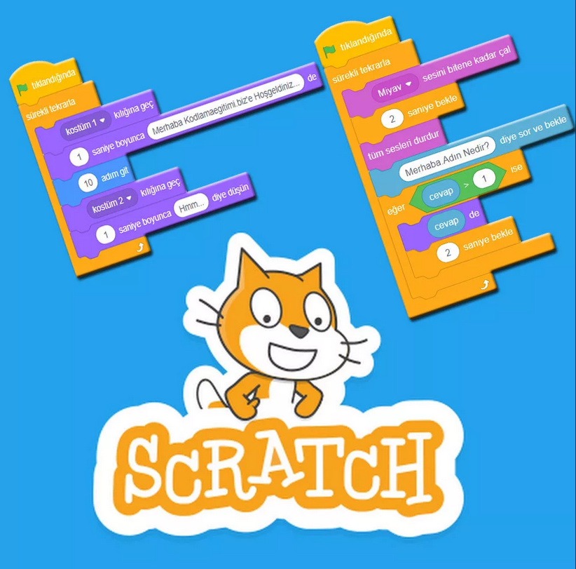

おすすめプログラミング言語３選
１・スクラッチ(scratch)

ブロックを組み合わせる簡単なプログラミング。
意外とすごいゲームを作れるのが面白い点。
２・html

ギットハブ(github)などを使えば、無料でホームページを作れる。
いろいろ試行錯誤したり、軽量化したりするのが楽しい。
３・ユニティ(unity)
個人的にはあまり触ったことがないけれど、３Dゲームが作れる点が面白い。
スクラッチ(scratch)よりは難しいかもしれないけれどJSとかよりは多分簡単。
そいではさようなら～
■□■□■□■□■□■□■□■□■□■□■□■□■□■□■□■□■□■□■□■□■□■□■□■□■□■□■□■□■□■□■□■□■□■□■□■□■□■□■□■□■□■□■□■□■□■□■□
豆